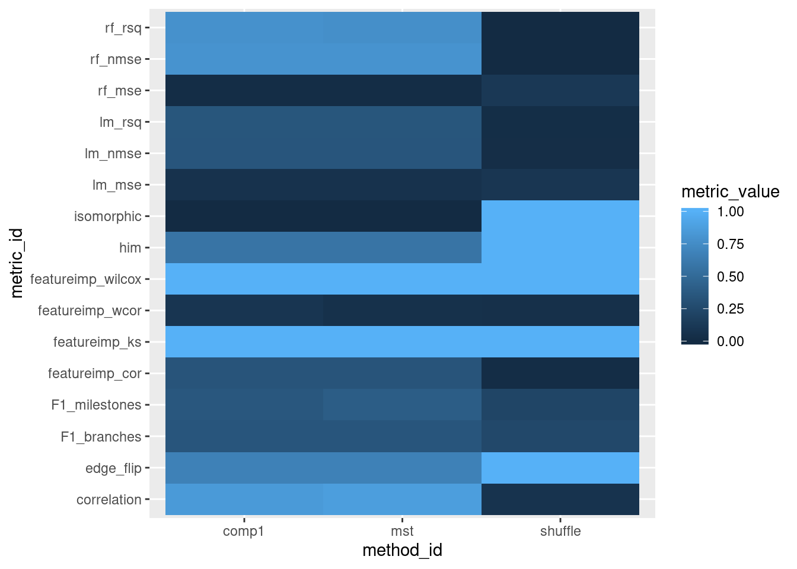

library(dynwrap)
library(dyneval)
library(dynmethods)
library(tidyverse)Let’s say we have a dataset with a gold-standard trajectory
dataset <- dyntoy::generate_dataset(model = "bifurcating")And run some methods
models <- infer_trajectories(dataset, list(ti_comp1(), ti_mst(), ti_shuffle()))
## Loading required namespace: hdf5rdyneval contains several ways of comparing these two trajectories
Several metrics are sped up by using “waypoint cells”:
dataset <- add_cell_waypoints(dataset)
models$model <- map(models$model, add_cell_waypoints)Now calculate some metrics
metric_ids <- dyneval::metrics %>% filter(category != "average") %>% pull(metric_id)
metrics <- map_dfr(models$model, dyneval::calculate_metrics, dataset = dataset, metrics = metric_ids)
## Loading required namespace: netdistbind_cols(metrics, models) %>%
select(method_id, !!metric_ids) %>%
gather("metric_id", "metric_value", -method_id) %>%
ggplot(aes(method_id, metric_id, fill = metric_value)) +
geom_tile()